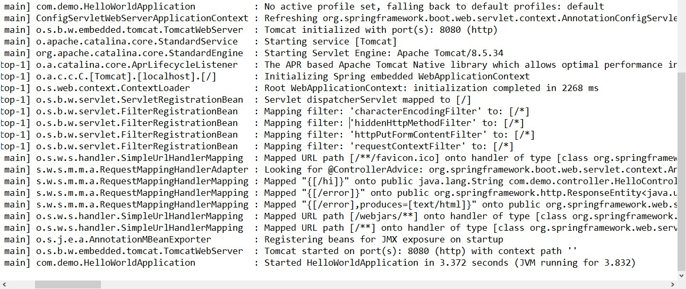
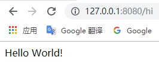

SpringBoot是建立在Spring基础之上，通过最少的Spring前期配置使应用程序尽快启动并运行。学习SpringBoot之前，预先掌握使用Spring、Maven工具。
特点：
创建工程
1) pom.xml文件
<?xml version="1.0" encoding="UTF-8"?>
<project xmlns="http://maven.apache.org/POM/4.0.0"
xmlns:xsi="http://www.w3.org/2001/XMLSchema-instance"
xsi:schemaLocation="http://maven.apache.org/POM/4.0.0 http://maven.apache.org/xsd/maven-4.0.0.xsd">
<modelVersion>4.0.0</modelVersion>
<groupId>com.demo</groupId>
<artifactId>spring-boot-helloworld</artifactId>
<version>1.0-SNAPSHOT</version>
<parent>
<groupId>org.springframework.boot</groupId>
<artifactId>spring-boot-starter-parent</artifactId>
<version>2.0.5.RELEASE</version>
</parent>
<dependencies>
<dependency>
<groupId>org.springframework.boot</groupId>
<artifactId>spring-boot-starter-web</artifactId>
</dependency>
</dependencies>
<!-- 项目打包为可执行jar包的插件-->
<build>
<plugins>
<plugin>
<groupId>org.springframework.boot</groupId>
<artifactId>spring-boot-maven-plugin</artifactId>
</plugin>
</plugins>
</build>
</project>
2) 创建@SpringBootApplication主程序类
package com.demo;
import org.springframework.boot.SpringApplication;
import org.springframework.boot.autoconfigure.SpringBootApplication;
/**
* @SpringBootApplication 标注主程序类，说明是SpringBoot应用
*/
@SpringBootApplication
public class HelloWorldApplication {
public static void main(String[] args) {
// Spring应用启动起来
SpringApplication.run(HelloWorldApplication.class,args);
}
}3) 定义请求
说明：程序启动时，自动扫描加载主程序类所在包以及全部子包的组件，范围以外的组件注解不自动扫描。
package com.demo.controller;
import org.springframework.stereotype.Controller;
import org.springframework.web.bind.annotation.RequestMapping;
import org.springframework.web.bind.annotation.ResponseBody;
@Controller
public class HelloController {
@ResponseBody
@RequestMapping("/hi")
public String hi(){
return "Hello World!";
}
}
4）运行
4.1 选择 HelloWorldApplication --> Run as --> Java Application

4.2 测试
